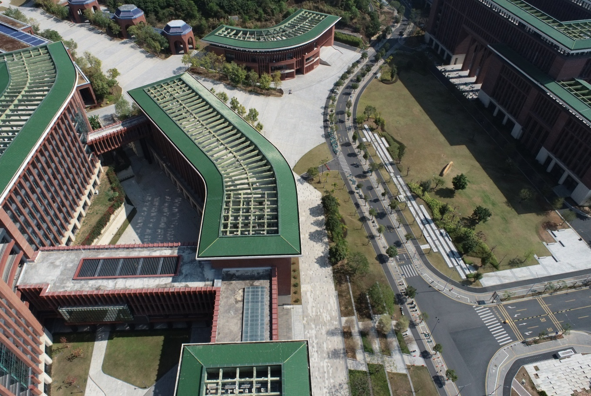

Input RGB
Pick P1, P2, or P3.

We project GT, MoGe2, and MoGe2-Aerial depth into 3D, making their metric scale differences directly visible.

A hybrid construction pipeline turns real captures, reconstructed scenes, and synthetic views into reliable metric depth supervision.

Zero-shot transfer of state-of-the-art ground-domain models (e.g., ZoeDepth, DepthPro, UniDepthV2) to aerial imagery often results in severe scale ambiguity and geometric distortion. By adapting the MoGe2 foundation model on our dataset (denoted as MoGe2-Aerial), we recover more reliable metric scale in real-world aerial scenes.
Parameters robustness: Baseline models exhibit severe, non-monotonic degradation regarding camera pitch and altitude, suffering catastrophic failures at strictly nadir (-90°) and highly oblique (-45°) angles. Our fine-tuned MoGe2-Aerial demonstrates exceptional stability across all evaluated pitch angles, altitudes, and FOVs.

@inproceedings{song2026aerialmetric,
title = {AerialMetric: Benchmarking and Adapting UAV Monocular Metric Depth Estimation in the Real World},
author = {Song, Zhongqiang and Chen, Guanying and Zhang, Yuqi and Zou, Yin and Fu, Chuanyu and Yuan, Zhiyuan and Huang, Chuan and Cui, Shuguang and Cao, Xiaochun},
booktitle = {European Conference on Computer Vision (ECCV)},
year = {2026}
}